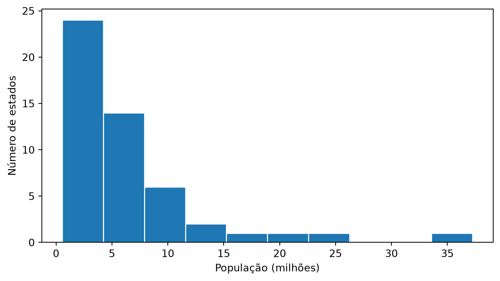

Esta seção corresponde à seção 1.5 de Bruce et al. (2020).
A seção 1.3 resumiu a população dos estados em um número — a localização. A seção 1.4 acrescentou um segundo número — a dispersão em torno dele. Os dois juntos já dizem bastante: onde os dados tendem a estar, e o quanto eles se afastam dali. Mas dois números continuam sendo um resumo, e todo resumo descarta informação. Esta seção para de resumir. Em vez de reduzir a distribuição a um ou dois pontos, ela olha a distribuição inteira — a forma completa que os dados assumem entre o menor e o maior valor.
Percentis e quantis
O percentil P é o valor abaixo do qual está P% das observações. A mediana, que a seção 1.3 já usou, nada mais é do que o percentil 50 — o caso particular em que exatamente metade dos dados fica de cada lado. Falar em percentis é generalizar essa ideia para qualquer fração, não só a metade. O termo quantil é o mesmo conceito, expresso em proporção (0,05) em vez de porcentagem (5%); quantile() no pandas usa essa segunda convenção.
percentis = [0.05, 0.25, 0.5, 0.75, 0.95]tabela = pd.DataFrame(estado["Taxa.Homicidios"].quantile(percentis))tabela.index = [f"{p:.0%}"for p in percentis]tabela.transpose().map(lambda v: num(v, 3))
5%
25%
50%
75%
95%
Taxa.Homicidios
8,238
16,165
23,130
30,295
35,197
Os cinco números da tabela dizem: 5% dos estados têm taxa de homicídios de até 8,238 por 100.000 habitantes — os dois estados menos violentos do país; na outra ponta, 95% ficam até 35,197, ou seja, só 5% (2 estados, em 27) superam essa marca. O intervalo entre o percentil 5 e o percentil 95 cobre os 90% centrais da distribuição e é uma forma comum de descrever o “grosso” dos dados sem deixar os extremos dominarem a leitura, do mesmo jeito que a mediana evita que eles dominem a localização.
Boxplot
O boxplot é uma leitura visual direta dos percentis. A caixa vai do primeiro ao terceiro quartil — e a largura dessa caixa é exatamente o IQR que a seção 1.4 calculou como medida de dispersão. Não é uma coincidência nem uma analogia: é a mesma conta, olhada de dois ângulos diferentes. A linha dentro da caixa marca a mediana. Os bigodes se estendem até 1,5 vez o IQR além de cada quartil, e qualquer observação além disso é desenhada como um ponto individual, não absorvida pela escala do gráfico.
Figura 6.1: Boxplot da população dos estados. Os pontos acima do bigode são os estados atipicamente populosos.
Lendo o gráfico: metade dos estados tem entre 2,9 e 9,4 milhões de habitantes — é o que a caixa mostra. A mediana está em 4,1 milhões. E os dois pontos isolados acima do bigode superior são Minas Gerais (21,3 milhões) e São Paulo (46,0 milhões): os únicos estados populosos o bastante para escapar de 1,5×IQR além do terceiro quartil.
Tabela de frequência e histograma
A tabela de frequência divide o intervalo de valores em faixas de largura igual e conta quantas observações caem em cada uma. pd.cut faz exatamente isso.
As faixas são de largura igual, não de contagem igual — e o resultado mostra isso sem meio-termo. A primeira faixa, sozinha, concentra 15 dos 27 estados — mais da metade; as faixas do topo têm um estado cada, ou nenhum. Isso não é um defeito do corte: é o retrato de uma distribuição com cauda longa à direita, a mesma assinatura que a média puxada para cima (seção 1.3) e o desvio-padrão inflado (seção 1.4) já haviam denunciado — agora visível na contagem, faixa por faixa.
O histograma é essa mesma tabela desenhada: uma barra por faixa, com altura proporcional à contagem. As barras se encostam porque o eixo é contínuo — não há espaço entre “faixa 1” e “faixa 2” do jeito que há entre categorias distintas.
fig, ax = plt.subplots()(estado["Populacao"] /1e6).plot.hist(ax=ax, bins=10, edgecolor="white")ax.set_xlabel("População (milhões)")ax.set_ylabel("Número de estados")plt.tight_layout()plt.show()

Figura 6.2: Histograma da população. As barras se encostam porque o eixo é contínuo.
Densidade
A curva de densidade é uma versão suavizada do histograma: em vez de barras discretas, uma curva contínua que estima a forma subjacente da distribuição. A diferença crucial é a escala do eixo Y. Enquanto o histograma tradicional mostra contagem, a densidade é normalizada para que a área sob a curva valha exatamente 1 — é o preço de tratá-la como uma distribuição de probabilidade, não como uma lista de frequências.
Figura 6.3: Histograma da taxa de homicídios com a curva de densidade sobreposta.
O density=True no histograma é o que torna as duas curvas comparáveis nesse gráfico. Sem ele, o eixo Y do histograma seria contagem (quantos estados em cada faixa) e o da densidade seria densidade de probabilidade (área total igual a 1) — duas escalas diferentes convivendo no mesmo eixo. Nesse caso, a curva de densidade apareceria colada em zero, achatada pela contagem muito maior das barras.
Assimetria
As seções 1.3 e 1.4 reduziram a população dos estados a dois números: um valor típico e uma medida de quanto os dados se espalham em torno dele. Considere agora três turmas fictícias de 25 alunos, com boletins idênticos: média 65, desvio-padrão 12. Se essas duas estatísticas fossem tudo que existisse para descrever uma turma, seria razoável supor que as três se parecem. Elas não se parecem: uma tem a maioria das notas abaixo da média com um rastro de notas altas puxando para cima; outra é o espelho exato dessa primeira; a terceira não tem rastro para nenhum lado. Média e variância dizem onde os dados estão centrados e quão espalhados eles estão — nenhuma das duas diz uma palavra sobre a forma.
As quatro estatísticas a seguir tornam a diferença impossível de ignorar:
resumo = pd.DataFrame( {"Média": [num(t.mean(), 1) for t in turmas.values()],"Mediana": [num(np.median(t), 1) for t in turmas.values()],"Variância": [num(t.var(ddof=1), 1) for t in turmas.values()],"Assimetria": [num(stats.skew(t, bias=False), 2) for t in turmas.values()], }, index=list(turmas),)resumo
Média
Mediana
Variância
Assimetria
A — à direita
65,0
61,1
144,0
0,81
B — à esquerda
65,0
68,9
144,0
-0,81
C — simétrica
65,0
65,0
144,0
0,00
A regra emerge sozinha da tabela, sem precisar ser decorada. Assimetria positiva → cauda à direita → média maior que a mediana (65,0 > 61,1, turma A). Assimetria negativa → cauda à esquerda → média menor que a mediana (65,0 < 68,9, turma B). Assimetria zero → média igual à mediana (65,0 = 65,0, turma C).
O motivo é o mesmo que a seção 1.3 já expôs para a média sozinha, agora com um número que o mede: a cauda longa arrasta a média, porque ela soma todos os valores — inclusive os poucos que estão longe do resto —, e não move a mediana, que só enxerga o valor do meio da fila.
Regra prática: assimetria positiva significa cauda à direita e média acima da mediana; assimetria negativa significa cauda à esquerda e média abaixo da mediana; assimetria zero significa média e mediana coincidindo. O sinal da assimetria é o sinal da diferença entre média e mediana.
Figura 6.4: Três turmas com a mesma média e a mesma variância — e formas completamente diferentes. A linha vermelha é a média; a verde tracejada, a mediana.
No painel A, a maioria das notas se aglomera abaixo de 65, com um rastro de notas altas se estendendo para a direita — é esse rastro que empurra a linha vermelha (média) para além da linha verde tracejada (mediana). No painel B a imagem é o espelho: a maioria das notas fica acima de 65, com o rastro agora à esquerda, e a média fica abaixo da mediana. No painel C não há rastro para nenhum dos dois lados, e as duas linhas praticamente se sobrepõem. O sharey=True importa: sem ele, cada painel escolheria sua própria escala vertical, e a comparação entre as três formas ficaria distorcida.
O histograma mostra a forma inteira, mas a assimetria aparece igualmente bem no boxplot — que resume cada turma em cinco números. Empilhando os três lado a lado, a diferença salta aos olhos mesmo sem contar nenhuma nota:
fig, ax = plt.subplots(figsize=(8, 3))caixas = ax.boxplot( [turma_c, turma_b, turma_a], # de baixo para cima: simétrica, esquerda, direita tick_labels=["C — simétrica", "B — à esquerda", "A — à direita"], vert=False, patch_artist=True, medianprops={"color": "#27ae60", "linewidth": 2}, widths=0.6,)for caixa in caixas["boxes"]: caixa.set(facecolor="#b0c4d8", edgecolor="#2c3e50")ax.set_xlabel("Nota")plt.tight_layout()plt.show()
/tmp/ipykernel_347/294545130.py:3: MatplotlibDeprecationWarning: vert: bool was deprecated in Matplotlib 3.11 and will be removed in 3.13. Use orientation: {'vertical', 'horizontal'} instead.
caixas = ax.boxplot(
Figura 6.5: As mesmas três turmas em boxplot. A linha central é a mediana; a caixa vai do primeiro ao terceiro quartil; os bigodes alcançam o restante das notas.
Repare em onde a linha da mediana cai dentro da caixa. Na turma A (à direita), ela encosta no lado esquerdo da caixa — abaixo do centro — e o bigode direito é longo, alcançando as poucas notas altas; é a mesma cauda à direita do histograma, agora comprimida em uma barra. Na turma B a caixa é o espelho perfeito: mediana encostada à direita, bigode longo à esquerda. Na turma C a mediana fica no centro exato e os dois bigodes têm o mesmo comprimento. Uma caixa cuja mediana não está no meio, ou cujos bigodes têm comprimentos diferentes, é um boxplot lhe dizendo, sem nenhum número, que a distribuição é assimétrica.
A assimetria (skewness) mede esse desequilíbrio entre as caudas em um único número:
O expoente 3 é o que faz a fórmula funcionar: ele preserva o sinal do desvio. Um desvio acima da média entra positivo; um desvio abaixo, negativo — e eles se cancelariam, como cancelam na média dos desvios simples (seção 1.4), a menos que uma das caudas seja mais comprida ou mais extrema que a outra. É exatamente esse desequilíbrio residual que sobra depois do cancelamento. Compare com o desvio-padrão: ali o desvio é elevado ao quadrado, o quadrado de um número negativo é positivo, o sinal desaparece — e é por isso que o desvio-padrão, por mais que meça dispersão, não diz absolutamente nada sobre para qual lado os dados pendem.
Voltando aos dados reais das 27 unidades federativas:
print(f"População das UFs : {num(stats.skew(estado['Populacao'], bias=False), 2)}")print(f"Taxa de homicídios : {num(stats.skew(estado['Taxa.Homicidios'], bias=False), 2)}")
População das UFs : 2,96
Taxa de homicídios : -0,19
A população tem assimetria de 2,96 — fortemente à direita. É a mesma razão, vista por outro ângulo, pela qual a seção 1.3 encontrou uma média 90% maior que a mediana: um único estado, São Paulo, está tão distante do resto que arrasta a média para cima sem deslocar a mediana um centímetro. A taxa de homicídios, com -0,19, está quase simétrica — média e mediana quase coincidem, e a distância entre elas quase desaparece.
Essa cauda à direita também não é acaso. A seção 1.4 mostrou, ao tentar aumentar o desvio-padrão da taxa de homicídios sem mexer na média, que o piso em zero trava quanto uma variável positiva pode se espalhar para baixo — mas não trava nada para cima. É essa assimetria estrutural entre o chão e a ausência de teto que empurra população, renda e tantas outras variáveis que só existem como números positivos sempre para o mesmo lado: a direita.
Resumo
Ferramenta
O que mostra
Percentis / quantis
A posição exata de qualquer fração dos dados
Boxplot
Q1, mediana, Q3 e outliers num único desenho compacto
Tabela de frequência / histograma
Como a massa dos dados se distribui em faixas de largura igual
Densidade
A forma contínua por trás das barras do histograma
Regra prática: localização (1.3) e dispersão (1.4) respondem “qual é o valor típico” e “o quanto os dados variam”. Elas não respondem “qual é a forma da distribuição” — se ela é simétrica, se tem cauda longa, se há grupos isolados de valores extremos. Para isso, é preciso abrir mão do resumo e olhar a distribuição inteira, com as quatro ferramentas desta seção.
Exercícios
1. A mediana da taxa de homicídios é 23,130 e o percentil 95 é 35,197. Interprete o segundo número em uma frase.
DicaResposta
95% dos estados têm taxa de homicídios igual ou inferior a 35,197 por 100.000 habitantes; apenas 5% (2 estados, em 27) ficam acima disso.
2. No boxplot, por que os pontos acima do bigode são desenhados individualmente em vez de o bigode simplesmente se estender até eles?
DicaResposta
Por convenção, o bigode vai até 1,5×IQR além do quartil. Pontos além disso são candidatos a outlier e são marcados individualmente justamente para chamar atenção — o objetivo é que você os veja, e não que eles sejam absorvidos pela escala do gráfico.
3. A tabela de frequência com pd.cut em 10 faixas colocou mais da metade dos estados (15 de 27) na primeira faixa. Isso é um defeito do método?
DicaResposta
Não — é um retrato fiel dos dados. pd.cut cria faixas de largura igual, e a distribuição de população dos estados é assimétrica. Se o objetivo fosse faixas de contagem igual, a ferramenta certa seria pd.qcut (que corta por quantis, não por largura). São perguntas diferentes: uma mostra a forma da distribuição, a outra a divide em grupos do mesmo tamanho.
4. Um relatório informa que a renda média de um município é R$ 4.200 e a mediana é R$ 2.100. Sem ver os dados, o que você pode afirmar sobre a assimetria da distribuição de renda? E se média e mediana fossem iguais?
DicaResposta
A média é o dobro da mediana, então a assimetria é positiva (à direita): há uma cauda de rendas altas puxando a média para cima, enquanto a mediana permanece onde está a maior parte das pessoas. É o padrão universal da renda, e a razão pela qual se reporta a mediana. Se média e mediana fossem iguais, a distribuição seria simétrica — o que, para renda, praticamente não acontece.
Bruce, Peter, Andrew Bruce, e Peter Gedeck. 2020. Practical Statistics for Data Scientists: 50+ Essential Concepts Using R and Python. 2nd ed. O’Reilly Media.